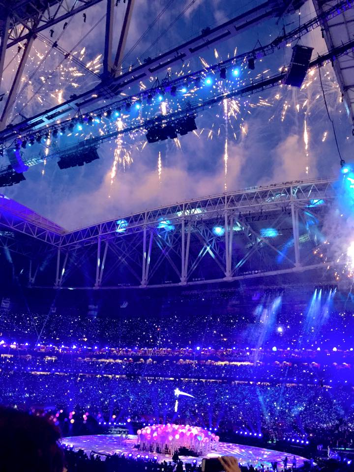

A quick intro:

Hello world! I am a 24 year old web developer student living in Seattle, WA. I graduated from the University of Washington in 2013, with a degree in communications and political science. After graduation, similar to many graduates, I struggled to find my passion. The fall of 2013, I landed my first full-time job, working at Comcast Communications as a sales representative. The job was great for the first month, then it went downhill as I was doing the same thing over and over every single day. After the 8th month, I knew I had enough of the job, and left to continue my work with the Seattle Seahawks. A little background on how that started -through the end of high school and early college, I worked for YouthForce, a non-profit through the Boys and Girls Club. At YouthForce, I had the opportunity to work all Sounders and Seahawks home games, assisting from VIP sidelines tours to helping out in the hospitality suites. From there, I networked my way to the organization and started to work for their promotions and events team in 2011. From 2011-2015, I've had the experience of my life, working for the NFL. Anywhere from going on tour to the SuperBowl, it was an experience I will never forget.
As much fun the NFL was, the pay was not what I had bargained for. Still struggling to find my passion, I decided to resign and work for the University of Washington, where I knew professional development was one of their top goals. Within the 8 months I had been there, I discovered that web development was what I wanted to do. I had the opportunity to work with graphic designers, marketing directors and web designers to strategically plan ways to market the University. Long story short, I am happy to be where I am at. My goal, however, is to one day become a web developer for the NFL.
